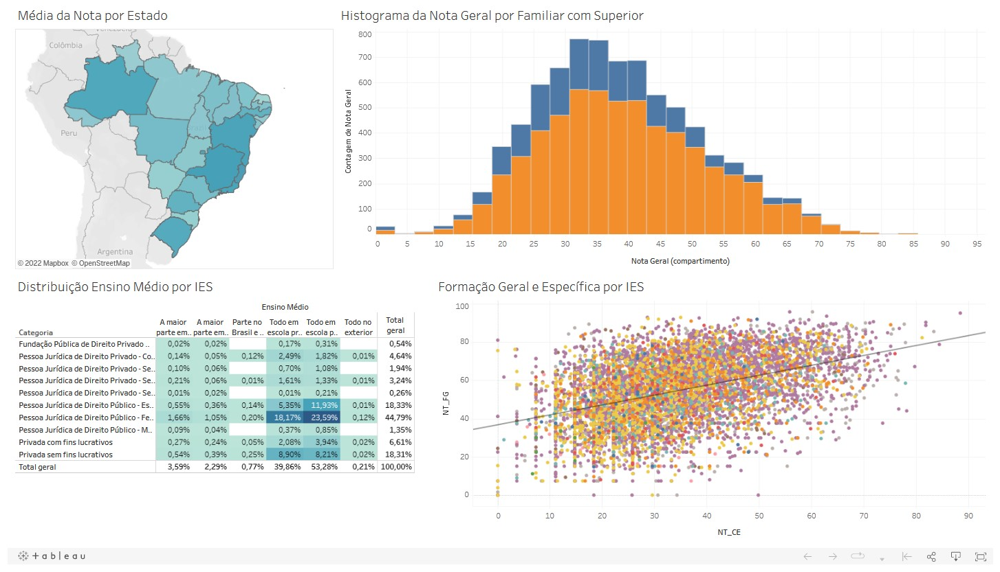

Este dashboard foi desenvolvido como exercício na disciplina de Estatística Econômica e Introdução à Econometria na Universidade Federal do Paraná.
Sobre o Projeto
Este dashboard é uma continuação da análise dos microdados do ENADE 2018, com foco exclusivo no curso de Ciências Econômicas. O painel foi desenvolvido para facilitar a exploração interativa dos dados — permitindo que o usuário filtre, cruze variáveis e identifique padrões de desempenho acadêmico de forma visual e intuitiva.
O Tableau foi escolhido pela sua capacidade de criar visualizações ricas e interativas, tornando a análise acessível mesmo para quem não tem familiaridade técnica com os dados brutos.
Recursos do Painel
- Filtros por modalidade de ensino (presencial/EAD), turno e categoria administrativa
- Distribuição de notas por faixa de renda familiar
- Comparativo de desempenho entre regiões e estados
- Análise por escolaridade dos pais e outros indicadores socioeconômicos
O dashboard está publicado no Tableau Public e pode ser acessado de forma interativa pelo link abaixo.
Acessar no Tableau Public